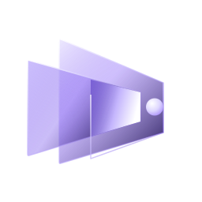

Recherche visuelle
Réunir images, notes et liens dans un espace de travail visuel.
Application Windows
Une application de bureau pour la recherche visuelle et la direction artistique : rassembler et organiser des références, explorer des pistes créatives et gérer des projets visuels.

Réunir images, notes et liens dans un espace de travail visuel.
Classer les références par projet et par piste créative.
Comparer des directions et garder une trace des décisions.
Se connecter, si vous le souhaitez, à des services externes compatibles avec vos propres comptes.
Vision Lab propose une connexion facultative à votre compte Pinterest, par l'autorisation officielle de Pinterest (OAuth), en lecture seule. Elle permet de :
Vision Lab ne propose pas de recherche dans l'ensemble de Pinterest. Les épingles sont affichées en direct depuis Pinterest : elles ne sont ni enregistrées, ni copiées dans vos projets, ni mélangées à d'autres sources, et chaque épingle renvoie vers Pinterest. Vision Lab ne publie et ne modifie rien sur votre compte, et n'utilise aucun contenu Pinterest pour entraîner un modèle d'intelligence artificielle. Vous pouvez retirer l'accès à tout moment, dans Vision Lab comme dans les paramètres de votre compte Pinterest.
Vision Lab n'a ni compte utilisateur ni serveur : vos projets restent sur votre ordinateur, sans mesure d'audience. Les données transmises aux services que vous activez sont décrites dans la politique de confidentialité.